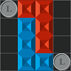
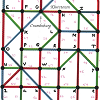
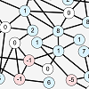
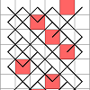
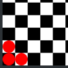
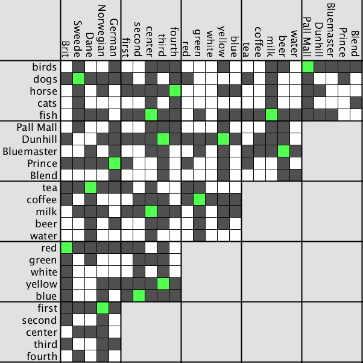

voltar
Quebra-Cabeças & Matemática

O Jogo do L
O jogo do L é um simples jogo de mesa abstrato de estrategia criado por Edward de Bono.
Foi apresentado em seu livro The Five-Day Course in Thinking ("O Curso Em Pensar de Cinco Dias") em 1967. [wikipedia].
Clique e arraste para mover as peças. Rodinha do mouse para rotacioná-las.
Botão direito do mouse para virá-las ao contrário. Mover as moedas é opcional, simplesmente clique-as para passar a vez.
Não há checagem de vitória! O jogador que se encontrar sem nenhuma jogada possível é o perdedor.

O Mapa de Transporte Púplico do Vovô.
Um desafio bem interessante a respeito de Grafos. Dada uma complexa
rede de transporte público, voce deve encontrar uma rota para o seu destino
pagando apenas uma passagem, através do uso das baldeações gratuitas.

O Jogo dos Dolares.
Uma versão Javascript do Jogo dos Dolares, para se jogar no navegador.
Baseado neste video do canal Numberphile, feito com p5.js.
Clique com o botão esquerdo do mouse para dar um dolar para cada vizinho.
Clique com o direito para pegar um dolar de cada vizinho.
Tente eliminar todos os numeros negativos do grafo!

A Princesa e o Castelo.
Implementação em Javascript do quebra-cabeça descrito por Matt Parker neste video.
feito com p5.js.
Clique com o botão esquerdo do mouse para selecionar uma porta para conferir cade noite.
As linhas indicam todos os caminho possiveis que a princesa poderia ter tomado até então.
Qual é a maneira mais rápida e 100% garantida de encontrar a princesa?

Liberte os Clones!
Implementação em Javascript do desafio matemático visto neste video do canal Numberphile.
Clique com o botão esquerdo do mouse para clonar as damas.
É possivel livrar os três quadradinhos iniciais de damas?

Desafios de Lógica
Uma interface para resolver desafios de lógica. um pouco de automação foi implementada,
como completar a coluna e a linha com 'falso' quando se aplica um 'verdadeiro', e a
comutação de valores falsos para outras celulas onde eles se aplicam indiretamente.
No exemplo visto aqui, eu carreguei o famoso "Desafio de Einstein" ou "Desafio da Zebra".
 O Jogo do Caos
O Jogo do Caos
Algumas animações e imagens de variações do jogo do caos.
Nas animações, o valor que varia com o tempo é a taixa de interpolação.
No caso com três âncoras, interpolar no meio (0,5) resulta no triângulo de Sierpiski.
Para outros numeros esse valor cresçe hiperbolicamente.

Outros
voltar
{kind=link}